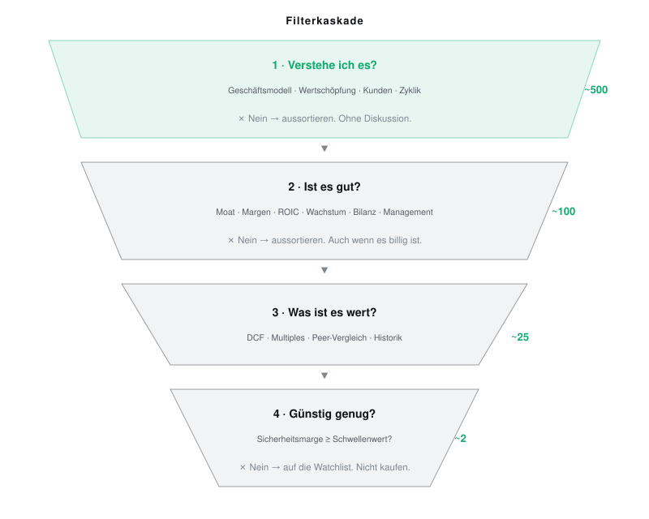
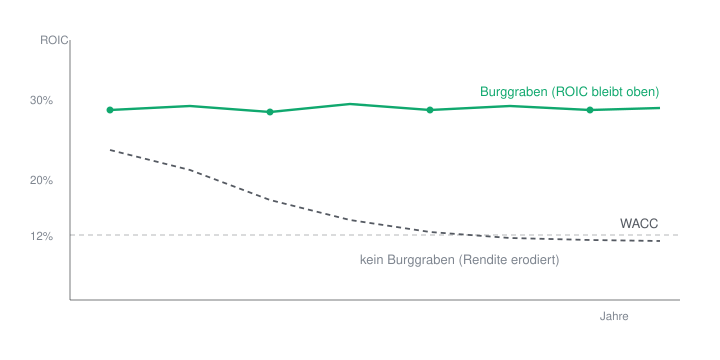
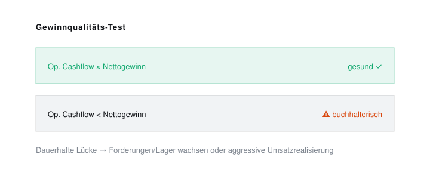
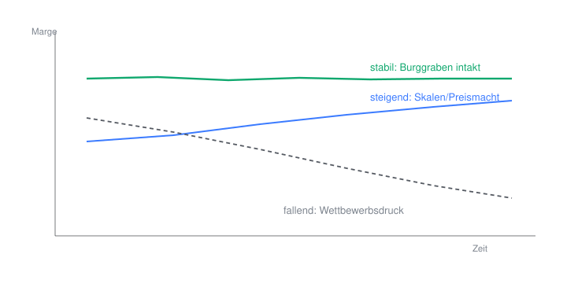
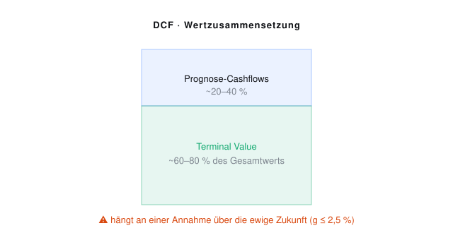
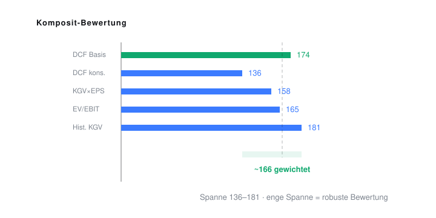
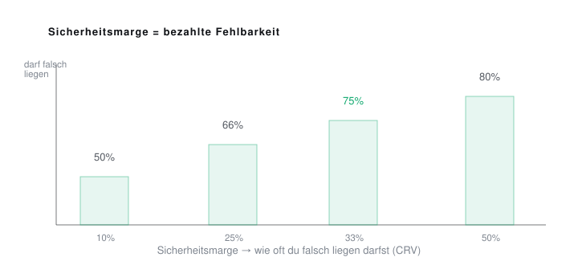

Lernziele
Nach diesem Modul kannst du:
- ein Geschäftsmodell in vier Sätzen beschreiben und beurteilen, ob du es verstanden hast;
- die fünf Quellen eines wirtschaftlichen Burggrabens unterscheiden und in einem konkreten Unternehmen identifizieren;
- Management anhand von Kapitalallokation statt anhand von Rhetorik bewerten;
- Umsatz, Gewinn, Marge, Free Cash Flow, Eigenkapital und Verschuldung über Zeit lesen und die Muster erkennen, die auf Probleme hindeuten;
- jede der gängigen Bewertungskennzahlen korrekt berechnen, interpretieren — und, was wichtiger ist, sagen, wann sie nicht anwendbar ist;
- ein vollständiges DCF-Modell aufbauen, seine Annahmen offenlegen und eine Sensitivitätsanalyse dazu rechnen;
- aus mehreren Verfahren einen fairen Wert ableiten und daraus eine Sicherheitsmarge bestimmen;
- erklären, warum ein einzelnes Bewertungsverfahren immer falsch ist und warum vier gleichzeitig (DCF, KGV, EV/EBITDA, DDM — die Verfahren in Fair Value Pro) trotzdem nützlich sind.
2.0Der Ablauf einer Fundamentalanalyse
Die Reihenfolge ist nicht beliebig. Sie ist eine Filterkaskade: Jede Stufe darf ein Unternehmen aussortieren, und die teuerste Stufe (die Bewertung) kommt zuletzt.

Der häufigste Fehler in der Fundamentalanalyse ist, mit Stufe 3 zu beginnen. Man findet ein niedriges KGV, wird neugierig und rationalisiert anschließend Qualität und Verständnis hinzu. Das ist die Mechanik jeder Value-Falle.
Merksatz 1Ein schlechtes Unternehmen wird durch einen niedrigen Preis nicht zu einem guten Investment. Es wird nur zu einem billigen schlechten Unternehmen.
Teil A — Qualitative Analyse
2.1Das Geschäftsmodell
Der Vier-Sätze-Test
Du hast ein Geschäftsmodell verstanden, wenn du diese vier Fragen ohne Nachschlagen beantworten kannst:
- Womit verdient das Unternehmen konkret Geld? (Nicht: „mit Software" — sondern: „mit Abonnements für X, die pro Nutzer und Monat Y kosten und im Durchschnitt Z Jahre laufen.")
- Wer bezahlt, und warum bezahlt er lieber hier als woanders?
- Was müsste passieren, damit dieser Umsatz wegfällt?
- Wächst der Umsatz durch mehr Kunden, höhere Preise oder mehr Produkte pro Kunde?
Umsatzqualität — nicht jeder Euro Umsatz ist gleich viel wert
| Umsatztyp | Merkmal | Bewertungsaufschlag | Beispiel |
|---|---|---|---|
| Wiederkehrend, vertraglich | Abo, Lizenz, Wartungsvertrag | hoch | Microsoft 365, Adobe |
| Wiederkehrend, verhaltensbasiert | Kunde kommt aus Gewohnheit wieder | hoch | Costco (Mitgliedschaft), Visa (Transaktionen) |
| Verbrauchsmaterial | Gerät einmal, Verbrauch immer wieder | hoch | Drucker/Toner, Kaffeekapseln |
| Projektgeschäft | Jeder Auftrag muss neu gewonnen werden | mittel | Bauunternehmen, Beratung |
| Zyklisch | Nachfrage schwankt mit der Konjunktur | niedrig | Autohersteller, Chemie, Stahl |
| Einmalig / transaktional | Große Anschaffung, dann nichts | niedrig | Möbel, Immobilien |
Praxisbeispiel — derselbe Sektor, zwei Umsatzqualitäten:
Visa verdient an jeder Kartentransaktion einen Bruchteil des Volumens. Das Volumen wächst mit dem globalen Konsum, mit der Inflation und mit der Verdrängung von Bargeld. Visa muss keinen einzigen Kunden neu gewinnen, damit der Umsatz steigt — es genügt, dass bestehende Kunden mehr ausgeben. Die operative Marge liegt in der Größenordnung von 65 %.
Eine Regionalbank verdient an Zinsdifferenzen. Der Umsatz hängt vom Zinsniveau ab, das sie nicht beeinflusst, und vom Kreditrisiko, das erst mit Verzögerung sichtbar wird. Der Umsatz ist wiederkehrend, aber die Ertragskraft ist es nicht.
Zyklik erkennen
Ein zyklisches Unternehmen ist nicht schlechter — aber es wird anders bewertet, und es kann mit den Standardkennzahlen nicht sinnvoll analysiert werden. Zykliker haben ihr höchstes KGV im Tief (weil der Gewinn eingebrochen ist) und ihr niedrigstes KGV im Hoch (weil der Gewinn auf einem nicht haltbaren Niveau steht).
Merksatz 2Bei Zyklikern ist ein niedriges KGV ein Warnsignal, kein Kaufsignal.
Erkennungsmerkmale von Zyklik:
- Umsatz oder EBIT sind in den letzten 15 Jahren mindestens einmal um über 30 % eingebrochen
- Das Unternehmen ist Preisnehmer, nicht Preissetzer
- Das Produkt ist ein Rohstoff, eine Vorleistung oder eine Investitionsgüter-Anschaffung
Typische Beispiele im Alltag — damit du es sofort einordnen kannst:
| Kategorie | Typische Zykliker | Warum |
|---|---|---|
| Autohersteller | BMW, Volkswagen, Mercedes-Benz, Ford, Stellantis | Autokauf ist aufschiebbar; in Rezessionen brechen Verkäufe massiv ein |
| Chemie / Rohstoffe | BASF, Bayer (Agrar), Dow, Air Liquide, Linde | Preisnehmer am Weltmarkt, Nachfrage schwankt mit der Industrieproduktion |
| Stahl & Metalle | ThyssenKrupp, ArcelorMittal, Salzgitter | Klassisches Rohstoffgeschäft; Preise vom Weltmarkt bestimmt |
| Öl & Gas | Shell, BP, ExxonMobil, TotalEnergies | Umsatz hängt am Ölpreis, den keiner der Konzerne setzt |
| Airlines / Reise | Lufthansa, IAG, Ryanair, TUI | Erste Ausgabe, die in Rezessionen gestrichen wird |
| Halbleiter-Ausrüster | Applied Materials, Lam Research, ASML (in Grenzen) | Chip-Hersteller investieren in Zyklen, nicht kontinuierlich |
| Bau & Maschinen | Heidelberg Materials, Holcim, Deutz, Caterpillar | Große Investitionsanschaffungen der Kunden |
Zum Vergleich — weitgehend nicht-zyklische („defensive") Unternehmen: Konsumgüter des täglichen Bedarfs (Nestlé, Procter & Gamble, Coca-Cola, Unilever), Pharma (Novo Nordisk, Roche, Johnson & Johnson), etablierte Software / Zahlungsdienste (Microsoft, Visa, Mastercard), Discounter (Costco, Aldi/Edeka über Zulieferer). Grund: Auch in Rezessionen isst du weiter Nestlé-Produkte, nimmst deine Medikamente und benutzt deine Kreditkarte.
Der praktische Schnelltest: Zieh dir den 15-Jahres-Chart von Umsatz oder EBIT (nicht dem Kursverlauf!) an. Siehst du deutliche Einbrüche 2008/2009 (Finanzkrise) oder 2020 (Corona)? Dann ist die Firma zyklisch. Sind die Balken ein weitgehend stetiger Anstieg? Nicht-zyklisch.
2.2Der Burggraben (Economic Moat)
Ein Burggraben ist kein Vorteil. Ein Burggraben ist ein Mechanismus, der einen Vorteil gegen Wettbewerb verteidigt. Der Unterschied ist entscheidend: Ein Vorteil ohne Verteidigungsmechanismus wird wegkonkurriert. Genau das erwartet die Ökonomie vom Normalfall.
Der ökonomische Test: Ein Unternehmen hat einen Burggraben, wenn es über einen langen Zeitraum eine Kapitalrendite (ROIC) deutlich über seinen Kapitalkosten (WACC) erzielt, ohne dass diese Rendite von Wettbewerbern eingeholt wird.

Die fünf Quellen
| # | Quelle | Mechanismus | Wie du sie prüfst | Beispiel |
|---|---|---|---|---|
| 1 | Immaterielle Vermögenswerte | Marke, Patente, Zulassungen | Kann das Unternehmen Preise über dem Marktniveau durchsetzen? Laufen Patente aus — wann? | Novo Nordisk (Patente), Luxusmarken |
| 2 | Wechselkosten | Der Wechsel kostet Geld, Zeit oder Risiko | Wie lange dauert eine Migration? Was passiert bei einem Fehler? | SAP, Microsoft (ERP/Office), Banken-Kernsysteme |
| 3 | Netzwerkeffekt | Jeder neue Nutzer erhöht den Wert für alle | Wird das Produkt besser, wenn mehr Leute es nutzen? | Visa, Meta, Marktplätze, Börsen |
| 4 | Kostenvorteil | Skalen-, Prozess- oder Standortvorteil | Ist die Kostenposition strukturell oder nur aktuell? | Costco (Einkaufsmacht), Amazon (Logistik) |
| 5 | Effiziente Skalierung | Der Markt ist zu klein für einen zweiten Anbieter | Würde ein zweiter Anbieter beide unprofitabel machen? | Netzbetreiber, Flughäfen, ASML (faktisch) |
Der Kern-Test: Preissetzungsmacht
Frage: Könnte dieses Unternehmen seine Preise um 10 % erhöhen, ohne signifikant Kunden zu verlieren?
- Ja, mühelos → starker Burggraben. (ASML: Es gibt keinen zweiten Anbieter für EUV-Lithografie.)
- Ja, mit etwas Reibung → vorhandener Burggraben. (Costco: Die Mitgliedsgebühr wurde über Jahrzehnte mehrfach erhöht, die Erneuerungsquote blieb bei rund 90 %.)
- Nein → kein Burggraben, unabhängig davon, was das Management erzählt. (Fluggesellschaften, Bauunternehmen, die meisten Einzelhändler.)
Burggräben erodieren
Praxisbeispiel — Intel. Über Jahrzehnte war Intel das Lehrbuchbeispiel für einen Kostenvorteil durch Fertigungsführerschaft: eigene Fabs, überlegener Fertigungsprozess, x86-Architektur als Quasi-Standard. Bruttomargen über 60 %. Dann verlor Intel den Prozessvorsprung an TSMC, verpasste den Wechsel zu Mobile und später zu KI-Beschleunigern. Der Burggraben war real — und er ist verschwunden. Das Unternehmen schrieb 2024 einen Milliardenverlust.
Die Lehre ist nicht „Intel war ein schlechtes Unternehmen". Die Lehre ist: Ein Burggraben ist eine Momentaufnahme, keine Eigenschaft. Er muss bei jeder Überprüfung neu belegt werden — das ist ein Teil deines Falsifikationskriteriums aus Modul 1.
Merksatz 3Prüfe nicht, ob ein Unternehmen einen Burggraben hat. Prüfe, ob er breiter oder schmaler wird.
2.3Management
Management ist der am schwersten zu quantifizierende und am leichtesten zu manipulierende Analysebereich. Deshalb gilt: Bewerte, was das Management getan hat, nicht was es sagt.
Die einzige Frage, die wirklich zählt: Kapitalallokation
Ein CEO hat im Wesentlichen fünf Verwendungen für jeden verdienten Euro:
| Verwendung | Wann sinnvoll | Warnzeichen |
|---|---|---|
| Reinvestition ins Kerngeschäft | Wenn ROIC > WACC | Investition trotz sinkender Kapitalrendite |
| Übernahmen | Wenn günstig gekauft und integrierbar | Serienübernahmen, hohe Goodwill-Abschreibungen |
| Aktienrückkäufe | Wenn die Aktie unter dem fairen Wert steht | Rückkäufe auf Allzeithoch; Rückkäufe, die nur Verwässerung durch Aktienoptionen ausgleichen |
| Dividende | Wenn keine bessere Verwendung existiert | Dividende auf Kredit; Dividende trotz Investitionsstau |
| Schulden tilgen | Wenn die Bilanz angespannt ist | — |
Praxisbeispiel — Bayer/Monsanto. Bayer übernahm 2018 Monsanto für rund 63 Mrd. USD. Die Übernahme brachte nicht nur ein Geschäft, sondern auch das Glyphosat-Prozessrisiko. In den Folgejahren führten Rechtsstreitigkeiten und Wertberichtigungen dazu, dass der Konzern über weite Strecken weniger wert war als der Kaufpreis der Übernahme allein. Eine einzige Kapitalallokationsentscheidung hat den Aktionärswert eines 150 Jahre alten Konzerns dominiert. Kein Bericht über „Innovationskraft" oder „Nachhaltigkeitsstrategie" hätte das kompensiert.
Konkrete, prüfbare Signale
Positiv:
- Der CEO hält bedeutende Aktien, die er gekauft hat (nicht: die er als Vergütung erhalten hat)
- Der Geschäftsbericht benennt Fehler explizit
- Die langfristige Vergütung ist an ROIC oder Gewinn je Aktie gekoppelt, nicht an Umsatz oder „adjusted EBITDA"
- Aktienanzahl sinkt über die Jahre — echte Rückkäufe, nicht nur Kompensation von Optionsprogrammen
- Geringe Fluktuation im Führungsteam
Negativ:
- Vergütung an Umsatzwachstum oder Unternehmensgröße gekoppelt (Anreiz zu wertvernichtenden Übernahmen)
- Hoher und steigender Anteil aktienbasierter Vergütung, der in den „adjusted"-Kennzahlen herausgerechnet wird
- Häufiger Wechsel des CFO
- Die berichteten „bereinigten" Gewinne liegen dauerhaft weit über den ausgewiesenen — und werden Jahr für Jahr um dieselben „einmaligen" Sondereffekte bereinigt
Merksatz 4Wenn eine Belastung jedes Jahr auftritt, ist sie kein Sondereffekt, sondern ein Kostenblock.
Teil B — Die Zahlen lesen
2.4Umsatzentwicklung
Definition: Erlöse aus der gewöhnlichen Geschäftstätigkeit, vor allen Kosten. Die oberste Zeile der Gewinn- und Verlustrechnung („Top Line").
Formel — Durchschnittliches jährliches Wachstum (CAGR):
Interpretation: Umsatz ist die einzige Zahl in der GuV, die sich nur schwer manipulieren lässt — aber selbst das gelingt in seltenen Fällen, wenn ein Unternehmen komplette Geschäftsvorfälle erfindet (das prominenteste Beispiel: der Wirecard-Skandal 2020, bei dem der damalige DAX-Konzern über Jahre Umsätze und Bankguthaben in Asien fingiert hatte — der ganze Fall wird in Abschnitt 2.5 aufgeschlüsselt). Wichtiger als die Höhe des Wachstums ist seine Zusammensetzung:
| Wachstumsquelle | Qualität | Woran erkennbar |
|---|---|---|
| Organisch, Menge | ausgezeichnet | Mehr Kunden / mehr Nutzung, ohne Übernahmen |
| Organisch, Preis | sehr gut — beweist Burggraben | Umsatz wächst stärker als Menge |
| Übernahmen | fragwürdig | Umsatz springt, Goodwill in der Bilanz steigt |
| Währungseffekte | irrelevant | Differenz zwischen berichtetem und währungsbereinigtem Wachstum |
Vorteile: Schwer zu fälschen, gut vergleichbar, früher Indikator.
Nachteile: Sagt nichts über Profitabilität. Umsatzwachstum, das Kapital vernichtet, ist schädlich, nicht neutral.
Wann sinnvoll: Immer, als erste Zeile jeder Analyse.
Wann ungeeignet: Als alleiniges Erfolgsmaß. „Umsatz ist Eitelkeit, Gewinn ist Vernunft, Cash ist Realität."
Praxisbeispiel: NVIDIA steigerte den Umsatz im Geschäftsjahr 2025 auf rund 130 Mrd. USD, mehr als eine Verdopplung gegenüber dem Vorjahr — getrieben von Rechenzentrums-GPUs, also organisch und mengengetrieben bei gleichzeitig steigenden Preisen. Das ist die höchstwertige Form von Wachstum, die es gibt.
Amazon wuchs 2024 auf rund 638 Mrd. USD — ebenfalls organisch, aber im margenschwachen Handelsgeschäft. Derselbe Umsatzzuwachs ist bei den beiden Unternehmen wirtschaftlich völlig unterschiedlich viel wert.
Zahlen gerundet und illustrativ. Im Kalkulator mit aktuellen Daten nachrechnen.
2.5Gewinnentwicklung
Definition: Was nach allen Kosten, Zinsen und Steuern übrig bleibt („Bottom Line", Nettogewinn).
Das Problem: Der Nettogewinn ist die am stärksten manipulierbare Zahl der gesamten Rechnungslegung. Abschreibungsdauern, Rückstellungen, Wertberichtigungen, Umsatzrealisierung — alle enthalten Ermessensspielraum.
Die Gewinnstufen und was sie taugen:
| Stufe | Was sie enthält | Manipulierbarkeit | Nutzen |
|---|---|---|---|
| Bruttogewinn | Umsatz − Herstellkosten | gering | Zeigt Preissetzungsmacht |
| EBITDA | vor Zinsen, Steuern, Abschreibungen | hoch | ⚠ siehe unten |
| EBIT (operatives Ergebnis) | vor Zinsen und Steuern | mittel | Bester Vergleichsmaßstab über Länder/Kapitalstrukturen |
| Nettogewinn | nach allem | mittel–hoch | Basis für EPS und KGV |
Die EBITDA-Warnung
EBITDA rechnet Abschreibungen heraus — mit der Begründung, sie seien „nicht zahlungswirksam". Das stimmt für das laufende Jahr. Es ist trotzdem irreführend: Abschreibungen sind die buchhalterische Verteilung einer sehr realen Zahlung, die entweder in der Vergangenheit stattfand oder in der Zukunft wieder stattfinden muss. Eine Maschine, die abgeschrieben ist, muss ersetzt werden.
EBITDA ist deshalb bei kapitalintensiven Unternehmen (Telekom, Industrie, Netzbetreiber) systematisch schmeichelhaft und wird von genau diesen Unternehmen bevorzugt berichtet. Bei kapitalarmen Unternehmen (Software, Zahlungsdienstleister) ist die Differenz zwischen EBITDA und EBIT klein — dort ist es unproblematisch.
Merksatz 5Je lauter ein Unternehmen über EBITDA spricht, desto genauer solltest du dir seine Investitionsausgaben ansehen.
Gewinnqualität prüfen
Der schnellste Test: Vergleiche den Nettogewinn mit dem operativen Cashflow über 5 Jahre.
Wenn Operativer Cashflow ≈ Nettogewinn → gesunde Gewinnqualität
Wenn Operativer Cashflow < Nettogewinn → ⚠ Gewinne sind buchhalterisch,
nicht zahlungswirksam
Klafft die Lücke dauerhaft, gibt es genau drei Erklärungen: Die Forderungen wachsen schneller als der Umsatz (Kunden zahlen nicht), die Lager wachsen (Ware verkauft sich nicht), oder es wird aggressiv Umsatz realisiert, der noch nicht verdient ist. Alle drei sind schlechte Nachrichten.
Praxisbeispiel — Wirecard. Wirecard wies über Jahre steigende Gewinne aus. Die entscheidende Anomalie war nicht in der GuV sichtbar, sondern in der Bilanz und im Cashflow: Ein wachsender Anteil des Vermögens bestand aus Guthaben auf Treuhandkonten in Asien, die niemand extern verifizieren konnte. Der operative Cashflow blieb hinter dem Gewinn zurück. Die Zahl, die fehlte, war das Geld.
2.6Free Cash Flow
Definition: Der Zahlungsmittelüberschuss, der nach allen operativen Ausgaben und den Investitionen zur Aufrechterhaltung und Erweiterung des Geschäfts übrig bleibt. Das ist das Geld, das dem Unternehmen tatsächlich frei zur Verfügung steht — für Dividenden, Rückkäufe, Schuldentilgung oder Übernahmen.
Formel:
Warum FCF wichtiger ist als der Gewinn:
| Nettogewinn | Free Cash Flow | |
|---|---|---|
| Beruht auf | Schätzungen, Periodenabgrenzung, Ermessen | tatsächlichen Zahlungsströmen |
| Manipulierbar | ja, erheblich | schwer, und nie über mehrere Jahre |
| Basis für DCF | nein | ja |
| Bezahlt Dividenden | nein | ja |
Vorteile: Die ehrlichste Zahl im Abschluss. Grundlage jeder seriösen Bewertung.
Nachteile: Schwankt stark (große Einzelinvestitionen verzerren einzelne Jahre). Muss geglättet oder normalisiert werden. Bei stark wachsenden Unternehmen kann er negativ sein, ohne dass etwas falsch läuft.
Wann sinnvoll: Bei reifen Unternehmen mit stabilem Investitionsbedarf. Immer über einen Mehrjahresdurchschnitt.
Wann ungeeignet: Bei jungen, stark investierenden Unternehmen; bei Banken und Versicherungen (dort ist der Cashflow-Begriff strukturell anders); bei Unternehmen mit einem einmaligen Großprojekt im Betrachtungsjahr.
Der Stock-Based-Compensation-Fallstrick
Der operative Cashflow rechnet aktienbasierte Vergütung (SBC) als „nicht zahlungswirksamen Aufwand" wieder hinzu. Formal korrekt: Es fließt kein Geld ab. Wirtschaftlich ist es aber ein sehr realer Kostenblock — die Altaktionäre werden verwässert, ihr Anteil am Unternehmen sinkt.
Bei Technologieunternehmen kann SBC 10–20 % des Umsatzes erreichen. Ein FCF, der SBC ignoriert, ist dort systematisch zu hoch.
Prüfe deshalb immer: Sinkt die Aktienanzahl trotz Rückkaufprogramm nicht? Dann werden die Rückkäufe vollständig von der Verwässerung aufgefressen — das Unternehmen kauft keine Aktien zurück, es bezahlt seine Mitarbeiter.

Praxisbeispiel: Apple erzielte im Geschäftsjahr 2024 einen Free Cash Flow in der Größenordnung von 109 Mrd. USD bei rund 391 Mrd. USD Umsatz — eine FCF-Marge von etwa 28 %. Gleichzeitig sank die Aktienanzahl über die Jahre erheblich. Das ist die Kombination, die man sucht: hohe Cash-Generierung und tatsächliche Reduktion der Aktienanzahl.
Zahlen gerundet und illustrativ.
Merksatz 6Gewinne sind eine Meinung. Cash ist eine Tatsache.
2.7Margen
Margen messen, wie viel von jedem Euro Umsatz beim Unternehmen hängen bleibt. Sie sind der direkteste quantitative Indikator für einen Burggraben.
| Marge | Formel | Was sie misst | Aussagekraft |
|---|---|---|---|
| Bruttomarge | Bruttogewinn / Umsatz | Preissetzungsmacht ggü. Kunden und Lieferanten | Höchste — hier zeigt sich der Moat zuerst |
| Operative Marge (EBIT-Marge) | EBIT / Umsatz | Effizienz des Gesamtbetriebs | Hoch — bester Vergleichsmaßstab |
| Nettomarge | Nettogewinn / Umsatz | Was nach allem übrig bleibt | Mittel — von Steuern & Kapitalstruktur verzerrt |
| FCF-Marge | FCF / Umsatz | Wie viel echtes Geld je Umsatz-Euro | Hoch — die ehrlichste Marge |
Das Niveau ist branchenabhängig — die Richtung ist es nicht
Ein Vergleich der Nettomarge zwischen Costco (~3 %) und Visa (~55 %) ist bedeutungslos. Beide sind exzellente Unternehmen. Sinnvoll sind nur zwei Vergleiche:
- Das Unternehmen gegen sich selbst über Zeit — steigt oder fällt die Marge?
- Das Unternehmen gegen direkte Wettbewerber — im selben Geschäftsmodell.
Was Margenentwicklung verrät

Eine fallende Bruttomarge ist eines der frühesten und zuverlässigsten Warnsignale überhaupt. Sie bedeutet fast immer: Das Unternehmen kann seine Preise nicht mehr durchsetzen. Sie erscheint typischerweise Jahre vor dem Kurseinbruch.
Praxisbeispiel: Intel wies über lange Zeit Bruttomargen um 60 % aus. Mit dem Verlust der Fertigungsführerschaft und steigenden Fab-Investitionen brach die Bruttomarge deutlich ein. Wer nur den Kurs beobachtete, sah lange nichts. Wer die Bruttomarge beobachtete, sah es früh.
Praxisbeispiel — hohe Marge als Moat-Beweis: NVIDIA erreichte in der KI-Hochphase Bruttomargen um 75 %. Eine Bruttomarge von 75 % bei Hardware ist ökonomisch nur erklärbar, wenn es faktisch keinen gleichwertigen Wettbewerber gibt. Genau das ist die Aussage der Zahl — und genau deshalb ist ihre künftige Entwicklung das zentrale Falsifikationskriterium für jede NVIDIA-These.
Merksatz 7Die Bruttomarge ist das Fieberthermometer des Burggrabens. Sie fällt, bevor der Kurs fällt.
2.8Eigenkapital und Verschuldung
Eigenkapital
Definition: Vermögen minus Schulden. Der buchhalterische Anteil der Aktionäre.
Wichtiger Vorbehalt: Das bilanzielle Eigenkapital sagt bei modernen Unternehmen fast nichts über den Wert aus. Der Wert von Apple liegt nicht in Gebäuden, sondern in Marke, Ökosystem und Kundenbindung — und die stehen nicht in der Bilanz.
Umgekehrt kann das Eigenkapital durch Goodwill künstlich aufgebläht sein. Goodwill (auf Deutsch „Geschäfts- oder Firmenwert") ist der Aufschlag, den ein Unternehmen bei einer Übernahme über den bilanziellen Substanzwert des gekauften Unternehmens hinaus bezahlt — für Marke, Kundenstamm, Marktposition, erhoffte Synergien. Dieser Aufschlag wird als Vermögensposten gebucht und hält das Eigenkapital rechnerisch hoch, obwohl ihm kein hartes, verwertbares Vermögen gegenübersteht. Erweist sich eine Übernahme als zu teuer, muss der Goodwill abgeschrieben werden — dann verdampft auf einen Schlag ein großer Teil des Eigenkapitals, ohne dass ein Euro Cash geflossen ist, und zuvor solide Bilanzkennzahlen brechen ein. (Das Bayer/Monsanto-Beispiel aus Abschnitt 2.3 ist genau dieser Fall.)
Prüfe deshalb immer:
Ist das materielle Eigenkapital negativ, während das bilanzielle positiv ist, besteht ein großer Teil der Bilanz aus Kaufpreisen für Übernahmen, die noch nicht abgeschrieben wurden. Das ist ein Abschreibungsrisiko.
Negatives Eigenkapital ist nicht automatisch ein Alarmsignal: Unternehmen mit hohen Aktienrückkäufen (z. B. Starbucks, zeitweise auch andere) können ein negatives bilanzielles Eigenkapital haben, weil zurückgekaufte Aktien das Eigenkapital mindern. Bei einem hochprofitablen, cashstarken Unternehmen ist das eine Kapitalstrukturentscheidung, kein Insolvenzrisiko. Bei einem unprofitablen Unternehmen ist es genau das.
Verschuldung
Die relevante Kennzahl ist nicht die absolute Schuldenhöhe, sondern die Tragfähigkeit.
| Kennzahl | Formel | Schwellenwert (Faustregel) |
|---|---|---|
| Nettoverschuldung | Finanzschulden − liquide Mittel | — |
| Nettoverschuldung / EBITDA | — | ≤ 3× unkritisch · > 4× angespannt |
| Nettoverschuldung / EBIT | — | ≤ 4× (strenger, im FVP-Qualitätsscore verwendet) |
| Zinsdeckungsgrad | EBIT / Zinsaufwand | ≥ 5× solide · < 2× gefährlich |
| Eigenkapitalquote | Eigenkapital / Bilanzsumme | branchenabhängig, > 30 % meist solide |
Der Zinsdeckungsgrad hat in dieser Reihe die größte Aussagekraft. Er beantwortet: Wie oft könnte das Unternehmen seine Zinsen aus dem operativen Ergebnis bezahlen? Ein Zinsdeckungsgrad unter 2 bedeutet: Ein einziges schlechtes Jahr, und das Unternehmen kann seine Zinsen nicht mehr bedienen.
Verschuldung ist ein Verstärker, kein Risiko an sich. Sie erhöht die Eigenkapitalrendite in guten Zeiten und vernichtet das Unternehmen in schlechten. Ein zyklisches Unternehmen mit hoher Verschuldung ist die gefährlichste Kombination in der gesamten Aktienanalyse — weil beide Risiken gleichzeitig eintreten.
Nicht zu vergessen: Leasingverbindlichkeiten und Pensionsrückstellungen sind wirtschaftlich Schulden, auch wenn sie manchmal nicht als solche präsentiert werden. Bei Einzelhändlern (Leasing) und deutschen Industriekonzernen (Pensionen) sind sie erheblich.
Merksatz 8Schulden töten Unternehmen nicht wegen ihrer Höhe, sondern wegen ihres Zeitpunkts. Sie werden immer dann fällig, wenn es am ungünstigsten ist.
2.9Kapitalrendite: ROE, ROIC, ROCE
Dies ist die zentrale Kennzahlengruppe der Fundamentalanalyse. Sie beantwortet die Frage, um die es im Kapitalismus ausschließlich geht: Wie viel verdient dieses Unternehmen mit dem Geld, das man ihm anvertraut?
ROE — Eigenkapitalrendite
Formel:
Interpretation: Rendite auf das Kapital der Aktionäre.
Der große Nachteil: ROE ist durch Verschuldung und Aktienrückkäufe manipulierbar. Beides senkt das Eigenkapital (den Nenner) und erhöht damit den ROE, ohne dass das Unternehmen operativ besser geworden wäre.
Praxisbeispiel — die ROE-Falle: Apple weist eine Eigenkapitalrendite in der Größenordnung von 150 % aus. Das ist keine Aussage über Apples operative Qualität, sondern im Wesentlichen eine Folge jahrelanger massiver Aktienrückkäufe, die das bilanzielle Eigenkapital auf einen kleinen Rest zusammengeschrumpft haben. Der Nenner ist winzig. Ein direkter ROE-Vergleich zwischen Apple (~150 %) und Microsoft (~33 %) sagt nichts darüber aus, welches Unternehmen besser wirtschaftet.
Die DuPont-Zerlegung entlarvt das, indem sie den ROE in drei Treiber aufspaltet:
- Nettomarge (Gewinn ÷ Umsatz) — wie profitabel jeder Euro Umsatz ist. Ausdruck der operativen Stärke.
- Kapitalumschlag (Umsatz ÷ Vermögen) — wie effizient das eingesetzte Vermögen in Umsatz verwandelt wird.
- Finanzhebel (Vermögen ÷ Eigenkapital) — wie viel Fremdkapital im Spiel ist. Praktisch: ein Maß für die Verschuldung.
Zwei Unternehmen können denselben ROE von 20 % haben — das eine, weil es hochprofitabel und effizient wirtschaftet (gute Gründe), das andere, weil es sich stark verschuldet hat (gefährlicher Grund). Der nackte ROE zeigt den Unterschied nicht; die Zerlegung schon.
Besondere Vorsicht beim dritten Faktor, dem Finanzhebel. Nimmt ein Unternehmen Schulden auf, sinkt der Eigenkapitalanteil — und weil der ROE durch das Eigenkapital geteilt wird, steigt er allein dadurch rein rechnerisch, ohne dass das Geschäft besser läuft. Ein steigender ROE, der nur aus mehr Verschuldung kommt, ist deshalb keine gute Nachricht, sondern mehr Risiko: Derselbe Hebel, der den ROE im Aufschwung hochtreibt, verstärkt im Abschwung die Verluste. Ein ROE-Anstieg ist nur dann positiv, wenn er aus Marge oder Effizienz stammt — nicht aus dem Hebel.
ROIC — Return on Invested Capital ⭐
Formel:
Warum ROIC die aussagekräftigste Kennzahl ist: Sie misst die Rendite auf das gesamte eingesetzte Kapital, unabhängig davon, ob es von Aktionären oder Gläubigern kommt. Der Finanzhebel-Trick funktioniert hier nicht.
Die zentrale Gleichung
Merke dir diese Zeile.
Der entscheidende Vergleich ist ROIC gegen Kapitalkosten. Das Kapital, mit dem ein Unternehmen arbeitet, ist nicht gratis: Eigenkapitalgeber (Aktionäre) erwarten Rendite, Fremdkapitalgeber (Banken, Anleihegläubiger) Zinsen. Dieser „Preis des Geldes" heißt Kapitalkosten (typischerweise in einer Größenordnung von 8–10 %; genauer über die WACC-Formel, die in Abschnitt 2.16 zum DCF ausgeführt wird). Liegt der ROIC über den Kapitalkosten, schafft jeder investierte Euro Wert. Liegt er darunter, vernichtet jeder investierte Euro Wert.
Daraus folgt etwas Kontraintuitives über Wachstum: Ein Unternehmen mit einem ROIC von 8 % und Kapitalkosten von 10 % verliert rein rechnerisch mit jedem eingesetzten Euro rund 2 Cent. Wächst es — setzt also mehr Kapital ein —, vergrößert es diesen Verlust: Verdoppelt es sein Geschäft, verdoppelt es die Wertvernichtung. Wachstum verstärkt nur, was ein Unternehmen ohnehin tut — es macht einen guten Kapitalverwerter besser und einen schlechten schlimmer. Wachstum ist also kein Selbstzweck; es ist nur dann gut, wenn die Rendite auf das dafür eingesetzte Kapital über den Kapitalkosten liegt.
Das ist der Grund, warum viele Wachstumsstorys scheitern — und warum ein „langweiliges" Unternehmen mit 25 % ROIC und 4 % Wachstum (das mit jedem Euro Wert schafft) ein besseres Investment sein kann als ein „spannendes" mit 6 % ROIC und 30 % Wachstum (das sein schnelles Wachstum mit Kapital finanziert, das mehr kostet, als es einbringt).
Orientierungswerte
| ROIC | Bewertung |
|---|---|
| > 20 % | Exzellent — starker Burggraben sehr wahrscheinlich |
| 12–20 % | Gut — Wert wird geschaffen |
| 8–12 % | Grenzbereich — knapp über/unter den Kapitalkosten |
| < 8 % | Kritisch — Wachstum vernichtet vermutlich Wert |
Wann ROIC ungeeignet ist: Bei Banken und Versicherungen (dort ist „investiertes Kapital" begrifflich anders definiert; dort ist ROE die passende Kennzahl). Bei Unternehmen mit riesigem Goodwill aus Übernahmen (das investierte Kapital enthält dann Kaufpreise, nicht produktives Vermögen — beide Varianten, mit und ohne Goodwill, betrachten).
Merksatz 9ROIC über WACC ist die einzige Definition von unternehmerischem Erfolg, die keiner Interpretation bedarf.
Teil C — Bewertung
2.10EPS — Gewinn je Aktie
Definition: Der Nettogewinn, aufgeteilt auf die ausstehenden Aktien.
Formel:
Immer die verwässerte (diluted) Anzahl verwenden — sie berücksichtigt Aktienoptionen und Wandelanleihen, die künftig zu neuen Aktien werden.
Der entscheidende Punkt: Das EPS kann steigen, ohne dass der Gewinn steigt — nämlich durch Aktienrückkäufe (der Nenner sinkt). Das ist nicht per se schlecht: Wenn das Unternehmen eigene Aktien unter ihrem fairen Wert zurückkauft, ist das eine der sinnvollsten Kapitalverwendungen überhaupt. Kauft es sie über dem fairen Wert zurück, vernichtet es Wert — und lässt das EPS trotzdem gut aussehen.
Prüfe daher immer beide Zeilen nebeneinander:
| Szenario A | Szenario B | |
|---|---|---|
| Nettogewinn | +10 % | −5 % |
| Aktienanzahl | unverändert | −12 % |
| EPS | +10 % | +8 % |
| Bewertung | echtes Wachstum | Finanzkosmetik |
Wann ungeeignet: Bei Verlusten (EPS negativ, KGV nicht definiert). Bei stark schwankenden Sondereffekten.
2.11KGV (Kurs-Gewinn-Verhältnis / P/E)
Definition: Wie viele Jahresgewinne du für eine Aktie bezahlst.
Formel:
Interpretation: Ein KGV von 20 bedeutet: Du bezahlst 20 € für 1 € aktuellen Jahresgewinn. Der Kehrwert ist die Gewinnrendite: 1/20 = 5 %. Diese Betrachtung ist oft hilfreicher — sie macht die Aktie direkt mit einer Anleihe vergleichbar.
Varianten:
| Variante | Basis | Nutzen |
|---|---|---|
| Trailing KGV (TTM) | letzte 12 Monate, tatsächlich | Fakt, aber rückwärtsgewandt |
| Forward KGV | Analystenschätzung nächstes Jahr | Zukunftsbezogen, aber Schätzungen sind oft zu optimistisch |
| Shiller-KGV (CAPE) | 10-Jahres-Durchschnittsgewinn, inflationsbereinigt | Glättet Zyklen — für Indizes und Zykliker |
Vorteile: Universell bekannt, sofort berechenbar, gut vergleichbar innerhalb einer Branche.
Nachteile:
- Ignoriert Wachstum vollständig (KGV 30 bei 25 % Wachstum kann billiger sein als KGV 12 bei 0 %)
- Ignoriert Verschuldung vollständig (zwei Unternehmen mit identischem KGV, eines schuldenfrei, eines hochverschuldet — das KGV sieht identisch aus)
- Beruht auf dem manipulierbaren Nettogewinn
- Bei Verlusten nicht definiert
Wann sinnvoll: Reife, profitable, stabile Unternehmen. Vergleich innerhalb einer Branche. Vergleich mit der eigenen Historie.
Wann ungeeignet: ⚠ Bei Zyklikern (siehe 2.1 — niedriges KGV im Hoch ist eine Falle). Bei Verlustunternehmen. Bei Unternehmen mit stark unterschiedlicher Verschuldung. Bei einmaligen Sondereffekten im Gewinn.
Praxisbeispiel — warum der Vergleich zweier KGVs oft sinnlos ist:
| Unternehmen X | Unternehmen Y | |
|---|---|---|
| KGV | 12 | 28 |
| Gewinnwachstum p.a. | −2 % | +18 % |
| ROIC | 7 % | 28 % |
| Nettoverschuldung/EBIT | 4,5× | −1,0× (Nettocash) |
| Welches ist teurer? | Das KGV allein reicht für keine Antwort. | |
Ein niedriges KGV bedeutet zunächst nur eines: Der Markt zahlt wenig pro Euro Gewinn. Das kann zwei entgegengesetzte Ursachen haben. Entweder der Markt irrt sich, und die Aktie ist wirklich zu günstig bewertet — ein echtes Schnäppchen. Oder der Markt hat recht und zahlt bewusst wenig, weil er weiß, dass die Gewinne schrumpfen werden — eine Value-Falle. Das KGV allein kann diese beiden Fälle nicht unterscheiden.
Genau hier ist die entscheidende Unterscheidung: optisch billig heißt nur „niedrige Kennzahl". Unterbewertet heißt „Preis unter dem fairen Wert" — und das ist erst nach Prüfung der übrigen Kennzahlen zu beurteilen. Eine Value-Falle ist billig, aber nicht unterbewertet: Der niedrige Preis ist gerechtfertigt.
Deshalb sagt das KGV allein nur: X ist optisch billig. Erst die übrigen Zeilen verraten den Unterschied — schrumpfender Gewinn (−2 % p. a.), ein ROIC von nur 7 % (im Grenzbereich der Kapitalkosten) und eine Nettoverschuldung von 4,5× EBIT entlarven X als Value-Falle. Y dagegen wächst mit +18 % p. a., verzinst sein Kapital mit exzellenten 28 % und ist sogar netto schuldenfrei — trotz des optisch hohen KGV von 28 kann das ein echtes Schnäppchen sein. Ein KGV ist erst dann eine Information, wenn du weißt, was daneben steht.
Merksatz 10Ein niedriges KGV ist keine Antwort. Es ist eine Frage: Warum ist das so billig? Meistens gibt es einen Grund — und meistens ist er gut.
Was ist ein gutes KGV?
Ob ein KGV gut ist, zeigt erst der Vergleich: mit Unternehmen derselben Branche, mit dem historischen Median-KGV der Aktie und mit dem erwarteten Gewinnwachstum. Ein KGV unter dem eigenen Median bei stabilen Gewinnen kann auf eine günstige Bewertung hindeuten. Ein niedriges KGV bei schrumpfenden Gewinnen ist oft eine Value-Falle (siehe oben). Fair Value Pro zeigt das historische Median-KGV als Linie im Kursverlauf.
2.12PEG-Ratio (Price/Earnings-to-Growth-Ratio)
Definition: Setzt das KGV ins Verhältnis zum Gewinnwachstum. Der Versuch, den größten Schwachpunkt des KGV zu reparieren.
Formel:
Interpretation (Peter-Lynch-Faustregel):
| PEG | Interpretation |
|---|---|
| < 1,0 | Wachstum ist im Preis noch nicht eingepreist |
| ≈ 1,0 | Fair bewertet |
| > 2,0 | Wachstum ist bereits vollständig (oder mehr als vollständig) bezahlt |
Rechenbeispiel:
Unternehmen A: KGV 30, Wachstum 30 % → PEG = 1,0
Unternehmen B: KGV 15, Wachstum 5 % → PEG = 3,0
Trotz des halb so hohen KGV ist B nach PEG dreimal so teuer wie A.
Vorteile: Einfach. Macht Wachstums- und Value-Titel überhaupt erst vergleichbar. Intuitiv.
Nachteile — und sie sind erheblich:
- Die Wachstumsrate ist eine Schätzung. Das PEG erbt die gesamte Unsicherheit dieser Schätzung und verkleidet sie als Präzision.
- Es ignoriert Verschuldung und Kapitalrendite komplett. Ein PEG von 0,8 bei 5 % ROIC ist wertlos.
- Es unterstellt implizit einen linearen Zusammenhang zwischen Wachstum und fairem Multiple. Der ist theoretisch nicht begründet.
- Es bricht bei sehr niedrigem oder negativem Wachstum vollständig zusammen (Division durch nahe null).
Wann sinnvoll: Als schneller Vorfilter beim Screening wachsender, profitabler Unternehmen. Als Plausibilitätscheck.
Wann ungeeignet: Als Grundlage einer Kaufentscheidung. Bei zyklischen, schrumpfenden oder verlustträchtigen Unternehmen. Als einzige Kennzahl.
Das PEG wird von Teilen der Fachwelt kritisch gesehen — zu Recht, wenn man es isoliert verwendet. In diesem Kurs wird es als Konzept erklärt, weil es dazu zwingt, das KGV nie ohne Wachstumskontext zu betrachten. In Fair Value Pro wird das PEG nicht berechnet — unsere Datenquelle liefert kein verlässliches erwartetes Gewinnwachstum, und ein PEG ohne solide Wachstumsschätzung wäre nur Scheinpräzision. Du kannst es mit den Zahlen aus dem Dashboard aber jederzeit selbst nachrechnen.
2.13EV/EBIT und EV/EBITDA
Enterprise Value — der Übernahmepreis
Definition: Was es kosten würde, das gesamte Unternehmen zu kaufen — inklusive der Übernahme seiner Schulden, abzüglich des Bargelds, das man mitkauft.
Formel:
Warum EV besser ist als die Marktkapitalisierung: Es berücksichtigt die Kapitalstruktur. Zwei Unternehmen mit identischer Marktkapitalisierung sind nicht gleich teuer, wenn eines 50 Mrd. Schulden hat und das andere 50 Mrd. Bargeld.
EV/EBIT ⭐
Formel: EV / EBIT
Interpretation: Wie viele Jahre operatives Ergebnis kostet das gesamte Unternehmen?
Das ist die sauberste Bewertungskennzahl für den Vergleich über Kapitalstrukturen und Länder hinweg, weil weder Verschuldung noch Steuersätze das Ergebnis verzerren.
| EV/EBIT | Grobe Einordnung |
|---|---|
| < 10× | günstig (Grund prüfen!) |
| 10–15× | normal |
| 15–25× | anspruchsvoll — Wachstum muss geliefert werden |
| > 25× | teuer — nur bei außergewöhnlicher Qualität + Wachstum rechtfertigbar |
Orientierungswerte, stark branchenabhängig.
EV/EBITDA
Formel: EV / EBITDA
Vorteile: Vergleichbar über Länder mit unterschiedlichen Abschreibungsregeln. Standard bei Übernahmen und in der Private-Equity-Welt. Anwendbar auch bei Unternehmen mit hohen Abschreibungen, die netto noch keinen Gewinn ausweisen.
Nachteile: ⚠ Ignoriert Investitionsbedarf — siehe die EBITDA-Warnung in Abschnitt 2.5. Bei kapitalintensiven Unternehmen ist EV/EBITDA systematisch zu schmeichelhaft.
Faustregel für die Auswahl:
Kapitalintensiv (Industrie, Telekom, Netze)? → EV/EBIT verwenden Kapitalarm (Software, Zahlung, Marken)? → beide fast identisch, egal Unternehmen betont selbst EBITDA? → ⚠ EV/EBIT prüfen
Wann beide ungeeignet: Bei Banken und Versicherungen (der EV-Begriff ist dort nicht sinnvoll definierbar, weil Schulden zum Geschäftsmodell gehören). Bei Verlustunternehmen auf EBIT-Ebene.
2.14Price/Sales (KUV)
Formel:
Interpretation: Wie viel bezahlst du für einen Euro Umsatz?
Vorteile: Funktioniert auch bei Verlustunternehmen. Umsatz ist schwer zu manipulieren. Nützlich bei jungen Wachstumsunternehmen, deren Gewinne noch durch Investitionen verdeckt sind.
Nachteile — der zentrale: Das P/S ignoriert die Marge vollständig. Und die Marge ist der Unterschied zwischen einem großartigen und einem wertlosen Geschäft.
Praxisbeispiel — warum P/S für sich genommen bedeutungslos ist:
| Costco | Visa | |
|---|---|---|
| Nettomarge (ca.) | 3 % | 55 % |
| P/S bei identischem KGV von 30 | 0,9 | 16,5 |
Costco sieht nach P/S 18-mal „billiger" aus als Visa — bei identischer Gewinnbewertung. Die Zahl misst hier nichts außer der Marge.
Nur sinnvoll:
- Beim Vergleich von Unternehmen im selben Geschäftsmodell mit ähnlichen Margen
- Beim Vergleich eines Unternehmens mit seiner eigenen Historie
- Bei Unternehmen, die noch keine Gewinne ausweisen — dann aber immer zusammen mit der Bruttomarge
Wann ungeeignet: Branchenübergreifende Vergleiche. Als alleiniges Kriterium. Immer.
Merksatz 11Price/Sales ohne Margenkontext ist keine Bewertung, sondern eine Zahl.
2.15Price/Book (KBV)
Formel:
Interpretation: Wie viel bezahlst du für einen Euro Buchwert?
Historisch war das die zentrale Value-Kennzahl. Benjamin Graham suchte Unternehmen unter Buchwert. Das funktionierte in einer Wirtschaft aus Fabriken, Maschinen und Lagerbeständen — Vermögen, das in der Bilanz steht und im Zweifel verkauft werden kann.
Warum es heute meist nicht mehr funktioniert: Der Wert moderner Unternehmen liegt in Software, Marken, Patenten, Netzwerken, Kundendaten und Mitarbeitern. Nichts davon steht in der Bilanz. Forschung und Entwicklung wird sofort als Aufwand verbucht, nicht aktiviert. Eine Marke, die über Jahrzehnte aufgebaut wurde, hat einen Buchwert von null.
Ergebnis: Softwareunternehmen haben strukturell hohe P/B-Werte, und das sagt nichts über ihre Bewertung aus.
Wo P/B weiterhin funktioniert:
| Branche | Warum |
|---|---|
| Banken | Das Vermögen ist die Bilanz (Kredite, Wertpapiere) — P/B ist hier die Hauptkennzahl |
| Versicherungen | dito |
| Immobiliengesellschaften | Vermögen ist real und bewertbar (NAV) |
| Kapitalintensive Industrie | Nennenswerter Anteil des Werts steckt in Sachanlagen |
Bei Banken gilt zusätzlich die Kopplung an den ROE:
Eine Bank mit einem ROE unter ihren Eigenkapitalkosten muss unter Buchwert notieren — das ist kein Schnäppchen, sondern die korrekte Bewertung eines Geschäfts, das Wert vernichtet.
Wann ungeeignet: Technologie, Software, Marken, Pharma, Dienstleistungen — also der Großteil der interessanten Unternehmen. Und immer, wenn viel Goodwill in der Bilanz steht.
2.16Discounted Cash Flow (DCF)
Alles bisher Behandelte waren relative Verfahren: Sie vergleichen ein Unternehmen mit anderen oder mit sich selbst. Der DCF ist das einzige absolute Verfahren — es leitet einen Wert aus dem Unternehmen selbst her, ohne Bezug auf den Markt.
Das Grundprinzip
Der Wert eines Unternehmens ist die Summe aller Zahlungsströme, die es in seiner Zukunft erwirtschaften wird, abgezinst auf heute.
Das ist keine Meinung, sondern eine Definition. Alles andere — KGV, EV/EBIT, P/B — sind Abkürzungen, die diesen Gedanken approximieren.
Warum abzinsen?
1.000 € heute sind mehr wert als 1.000 € in zehn Jahren. Erstens, weil du sie heute anlegen könntest. Zweitens, weil die Zahlung in zehn Jahren unsicher ist. Der Diskontsatz bepreist beides.
Die Formel
Der Diskontsatz: WACC
Typische Größenordnungen:
| Unternehmenstyp | WACC (grob) |
|---|---|
| Stabiler Blue Chip, geringe Verschuldung | 7–9 % |
| Durchschnittliches Industrieunternehmen | 8–10 % |
| Wachstumsunternehmen, höheres Beta | 10–13 % |
| Zykliker, hochverschuldet | 12–15 % |
Der Terminal Value — das Problem
Der Terminal Value (Restwert nach der Prognoseperiode) macht in typischen DCF-Modellen 60–80 % des Gesamtwerts aus. Das heißt: Der größte Teil deiner Bewertung hängt an einer Annahme über die ewige Zukunft.
Gordon-Growth-Modell — die Standard-Formel, um alle Cashflows nach dem Prognosezeitraum zu einem einzigen Wert zusammenzufassen. Sie verwendet die WACC und die ewige Wachstumsrate g (englisch growth: die Rate, mit der die Cashflows nach dem Prognosezeitraum dauerhaft weiterwachsen — typisch 2–3 %):
Die eiserne Regel für g:
Warum? Wenn ein Unternehmen ewig schneller wächst als die Weltwirtschaft, wird es irgendwann größer als die Weltwirtschaft. Das ist mathematisch möglich und ökonomisch unmöglich. Jedes DCF mit g = 5 % ist ein DCF, das behauptet, dieses Unternehmen werde eines Tages alles sein, was existiert.
Zusätzlich: Der Nenner ist (WACC − g). Je näher g an WACC rückt, desto kleiner der Nenner und desto explosiver der Terminal Value. Bei WACC 8 % und g 7 % ist der Nenner 1 % — der Terminal Value geht durch die Decke. Das ist keine Bewertung mehr, das ist eine Division durch fast null.

Sensitivität — die wichtigste Tabelle im DCF
Ein DCF liefert keine Zahl. Er liefert eine Landkarte von Zahlen. Man rechnet ihn nicht, um ein Ergebnis zu bekommen, sondern um zu sehen, wovon das Ergebnis abhängt.
Beispiel — fairer Wert je Aktie in Abhängigkeit von WACC und g:
| g = 1,5 % | g = 2,0 % | g = 2,5 % | g = 3,0 % | |
|---|---|---|---|---|
| WACC 7 % | 178 | 195 | 218 | 249 |
| WACC 8 % | 149 | 160 | 174 | 192 |
| WACC 9 % | 128 | 136 | 146 | 158 |
| WACC 10 % | 112 | 118 | 125 | 134 |
Illustrative Zahlen.
Was diese Tabelle sagt: Eine Änderung von zwei Annahmen um jeweils 1,5 Prozentpunkte verändert den fairen Wert von 112 auf 249 — er verdoppelt sich mehr als. Und keine dieser Annahmen ist beweisbar falsch.
Die richtige Schlussfolgerung ist nicht, den DCF zu verwerfen. Die richtige Schlussfolgerung ist:
- Verwende konservative Annahmen — nicht die, bei denen dir das Ergebnis gefällt.
- Betrachte eine Spanne, keinen Punkt.
- Verlange eine Sicherheitsmarge, die genau diese Unsicherheit bezahlt.
Die Rückwärtsrechnung (Reverse DCF) — der ehrlichste Einsatz
Statt zu fragen „Was ist die Aktie wert?", fragst du:
„Welches Wachstum muss dieses Unternehmen liefern, damit der heutige Kurs gerechtfertigt ist?"
Dann beurteilst du nicht die Bewertung, sondern die Erwartung. Und darüber kannst du sehr viel qualifizierter urteilen.
Beispiel: Der Reverse DCF ergibt, dass der aktuelle Kurs ein FCF-Wachstum von 22 % p.a. über zehn Jahre unterstellt. Jetzt lautet die Frage nicht mehr „Ist die Aktie teuer?", sondern: „Halte ich 22 % Wachstum über zehn Jahre für dieses Unternehmen für realistisch?" Das ist eine Frage, auf die du eine begründete Antwort geben kannst.
Merksatz 12Ein DCF ist kein Werkzeug zur Berechnung des Werts. Er ist ein Werkzeug zur Offenlegung deiner Annahmen. Wer ihn benutzt, um eine Zahl zu bekommen, benutzt ihn falsch.
Wann DCF ungeeignet: Bei Banken und Versicherungen (dort stattdessen Dividend-Discount- oder Residualgewinn-Modelle). Bei Unternehmen mit unvorhersehbaren, stark schwankenden Cashflows. Bei Frühphasenunternehmen ohne positiven FCF. Bei extremen Zyklikern.
2.17Der faire Wert
Warum ein einziges Verfahren immer falsch ist
Jedes Bewertungsverfahren hat einen blinden Fleck:
| Verfahren | Blinder Fleck |
|---|---|
| DCF | extreme Sensitivität gegenüber WACC und Wachstumsannahme g |
| KGV | ignoriert Wachstum und Verschuldung |
| PEG | erbt die Unsicherheit der Wachstumsschätzung |
| EV/EBIT | Vergangenheitsbezug, kein Wachstum |
| P/S | ignoriert die Marge |
| P/B | ignoriert immaterielles Vermögen |
| Historisches Multiple | unterstellt, dass die Vergangenheit fair bewertet war |
Die Lösung ist nicht, das beste Verfahren zu finden. Es gibt keines. Die Lösung ist, mehrere Verfahren gleichzeitig zu rechnen und ihre Streuung als Information zu behandeln.
Der Komposit-Ansatz
Verfahren Fairer Wert Gewicht ─────────────────────────────────────────────── DCF (Basis) 174 € 40 % DCF (konservativ) 136 € 10 % KGV × normalisiertes EPS 158 € 20 % EV/EBIT (Peer-Median) 165 € 15 % Historisches Median-KGV 181 € 15 % ─────────────────────────────────────────────── GEWICHTETER FAIRER WERT ~166 € SPANNE 136 € – 181 €

Die Spanne ist wichtiger als der Mittelwert.
- Enge Spanne (z. B. 160–175) → Die Verfahren sind sich einig. Deine Bewertung ist robust.
- Weite Spanne (z. B. 90–260) → Die Verfahren widersprechen sich fundamental. Das bedeutet nicht, dass eines falsch ist — es bedeutet, dass die Zukunft dieses Unternehmens hochgradig unbestimmt ist. Entweder verlangst du eine deutlich höhere Sicherheitsmarge, oder du legst das Unternehmen weg.
Merksatz 13Wenn sich deine Bewertungsverfahren nicht einig sind, ist das kein Fehler deiner Analyse. Es ist ihr wichtigstes Ergebnis.
2.18Sicherheitsmarge (Margin of Safety)
Definition
Beispiel: Fairer Wert 166 €, Kurs 116 € → MoS = (166 − 116) / 166 = 30,1 %
Wofür sie tatsächlich da ist
Die Sicherheitsmarge wird oft als „Puffer" oder „Rabatt" beschrieben. Das trifft es nicht. Sie ist die Bezahlung für die Unsicherheit deiner eigenen Analyse.
Du wirst dich irren. Deine Wachstumsannahme wird zu hoch sein. Deine WACC wird zu niedrig sein. Ein Wettbewerber wird auftauchen, den du nicht auf dem Radar hattest. Die Sicherheitsmarge ist der Betrag, um den du falsch liegen darfst, ohne Geld zu verlieren.
So wendest du sie praktisch an
Die Sicherheitsmarge ist keine Kennzahl, die du aus den Geschäftszahlen abliest — sie ist eine Vorgabe, die du selbst festlegst. Sie ist der Sicherheitsabstand zwischen dem, was eine Aktie wert ist, und dem, was du bereit bist, dafür zu zahlen. In der Praxis in drei Schritten:
Schritt 1 — Fairen Wert berechnen. Über die Verfahren dieses Moduls (DCF, Multiples, Komposit) kommst du zu einer Schätzung des inneren Werts. Im Definitionsbeispiel oben: 166 €.
Schritt 2 — Deine geforderte Sicherheitsmarge festlegen. Das ist die Zahl, die du wählst — im Beispiel 30 %. Sie bedeutet: „Ich kaufe erst, wenn der Preis mindestens 30 % unter meinem fairen Wert liegt." Der Grund: Dein Fair Value aus Schritt 1 ist unsicher — du könntest dich irren. Die Marge ist der Puffer für genau diesen möglichen Irrtum. Wie hoch sie sein sollte, hängt von der Unsicherheit ab (siehe Tabelle unter „Wie groß muss sie sein?"): mehr Unsicherheit → größere geforderte Marge.
Schritt 3 — Kaufschwelle ausrechnen. Reine Multiplikation:
Über 116 € kaufst du nicht — egal, wie überzeugt du vom Unternehmen bist. Erst wenn der Marktpreis auf 116 € oder darunter fällt, ist deine Sicherheitsmarge erfüllt und ein Kauf regelkonform.
Wo sie praktisch lebt: als Grundsatz in deinem Regelwerk (Modul 8), als berechneter Abstand in Fair Value Pro, und als notierte Kaufschwelle auf deiner Watchlist (Modul 4), auf deren Erreichen du wartest.
Was sie leistet: Kaufst du bei 116 €, und dein fairer Wert von 166 € stimmt, hast du deutliches Aufwärtspotenzial. Selbst wenn du dich geirrt hast und die Aktie eigentlich nur 130 € wert war, hast du bei 116 € immer noch unter Wert gekauft. Die Marge fängt deine Fehleinschätzung ab — das ist ihr ganzer Zweck.
Die Verbindung zu Modul 1
Erinnere dich an den Erwartungswert:
Die Sicherheitsmarge ist das CRV. Sie ist die Antwort auf die Frage, wie oft du falsch liegen darfst.
| Sicherheitsmarge | Implizites CRV (grob) | Du darfst falsch liegen in … |
|---|---|---|
| 10 % | ~1 : 1 | 50 % der Fälle |
| 25 % | ~2 : 1 | 66 % der Fälle |
| 33 % | ~3 : 1 | 75 % der Fälle |
| 50 % | ~4 : 1 | 80 % der Fälle |

Das ist der Moment, in dem Modul 1 und Modul 2 zusammenfallen. Die Sicherheitsmarge ist kein Value-Investing-Dogma und kein Stilelement. Sie ist die mathematische Voraussetzung dafür, dass ein Anlagesystem die Fehlbarkeit seines Anwenders überleben kann.
Wie groß muss sie sein?
Sie skaliert mit der Unsicherheit, nicht mit dem Optimismus:
| Situation | Geforderte Sicherheitsmarge |
|---|---|
| Sehr stabiles Unternehmen, enge Bewertungsspanne, starker Moat, schuldenfrei | 20–25 % |
| Normales Qualitätsunternehmen | 30 % |
| Zykliker, hohe Verschuldung, oder weite Bewertungsspanne | 40–50 % |
| Geschäftsmodell nicht vollständig verstanden | kein Kauf. Keine Marge ist groß genug. |
Die Value-Falle — und wie du sie erkennst
Eine hohe Sicherheitsmarge ist kein Kaufsignal, wenn der faire Wert selbst falsch berechnet ist.
Die typische Value-Falle sieht so aus:
- KGV 8, „günstig"
- Der Gewinn schrumpft seit Jahren
- Die Bruttomarge fällt
- Der ROIC liegt unter der WACC
- Der Markt selbst schrumpft strukturell
Dein DCF, gefüttert mit der historischen Gewinnhöhe, wird einen hohen fairen Wert und damit eine riesige Sicherheitsmarge ausweisen. Und er wird falsch sein, weil die historische Gewinnhöhe nie wiederkehrt.
Deshalb steht die Qualitätsprüfung (Stufe 2) vor der Bewertung (Stufe 3). Die Sicherheitsmarge schützt dich vor Schätzfehlern. Sie schützt dich nicht vor der Bewertung eines sterbenden Geschäfts.
Merksatz 14Die Sicherheitsmarge ist eine Versicherung gegen deine Rechenfehler. Sie ist keine Versicherung gegen dein Urteilsvermögen.
Typische Anfängerfehler in Modul 2
| Fehler | Warum er teuer ist | Gegenmittel |
|---|---|---|
| Mit der Bewertung beginnen statt mit dem Verständnis | Value-Falle | Filterkaskade einhalten (2.0) |
| KGVs branchenübergreifend vergleichen | Vergleicht Unvergleichbares | Nur innerhalb der Branche und gegen die eigene Historie |
| Niedriges KGV bei Zyklikern als Chance lesen | Höchster Gewinn = höchstes Risiko | Shiller-KGV oder Mittelzyklus-Gewinn verwenden |
| ROE als Qualitätsmaß nehmen | Durch Schulden und Rückkäufe manipulierbar | ROIC verwenden, DuPont zerlegen |
| DCF mit g = 4–5 % rechnen | Unterstellt ewiges Über-BIP-Wachstum | g ≤ 2,5 %, immer |
| Nur ein Bewertungsverfahren rechnen | Kein Gefühl für die Unsicherheit | Komposit + Spanne |
| Annahmen so lange drehen, bis das Ergebnis „passt" | Bestätigungsfehler in Reinform | Annahmen vor dem Blick auf den Kurs festlegen |
| Wachstum grundsätzlich für gut halten | Bei ROIC < WACC vernichtet Wachstum Wert | ROIC gegen WACC prüfen |
| EBITDA als Gewinnmaß nehmen | Ignoriert den realen Investitionsbedarf | EBIT und FCF prüfen |
| Aktienbasierte Vergütung ignorieren | FCF systematisch zu hoch, Verwässerung übersehen | Aktienanzahl über 5 Jahre prüfen |
Checkliste — Fundamentalanalyse
Stufe 1 — Verständnis
- Ich kann das Geschäftsmodell in vier Sätzen erklären.
- Ich weiß, wer bezahlt und warum.
- Ich weiß, ob das Geschäft zyklisch ist.
Stufe 2 — Qualität
- Der Burggraben ist benannt und einer der fünf Quellen zugeordnet.
- Er wird breiter, nicht schmaler.
- Bruttomarge über 10 Jahre: stabil oder steigend.
- ROIC > WACC, und zwar über mehrere Jahre.
- Operativer Cashflow ≈ Nettogewinn (keine Lücke).
- Nettoverschuldung/EBIT ≤ 4×, Zinsdeckung ≥ 5×.
- Aktienanzahl sinkt oder ist stabil.
- Kapitalallokation des Managements über 5 Jahre geprüft.
- Keine wiederkehrenden „Sondereffekte".
Stufe 3 — Bewertung
- Mindestens drei Verfahren gerechnet.
- DCF: g ≤ 2,5 %, WACC begründet, Sensitivitätstabelle vorhanden.
- Reverse DCF: Welches Wachstum preist der Markt ein? Halte ich es für realistisch?
- Bewertungsspanne notiert, nicht nur der Mittelwert.
- Annahmen wurden vor dem Blick auf den Kurs festgelegt.
Stufe 4 — Sicherheitsmarge
- Geforderte MoS vorher festgelegt (abhängig von der Unsicherheit).
- Tatsächliche MoS ≥ geforderte MoS.
- Falls MoS hoch: Ich habe explizit geprüft, ob es eine Value-Falle ist.
- Falsifikationskriterien notiert (aus Modul 1).
Zusammenfassung
- Die Analyse folgt einer Filterkaskade: Verstehen → Qualität → Wert → Preis. Wer bei „Wert" beginnt, landet in der Value-Falle.
- Der Burggraben ist kein Vorteil, sondern ein Verteidigungsmechanismus. Er zeigt sich quantitativ in einem dauerhaften ROIC über WACC.
- Management wird an Kapitalallokation gemessen, nicht an Rhetorik.
- Free Cash Flow ist ehrlicher als der Gewinn. Die Lücke zwischen operativem Cashflow und Nettogewinn ist eines der zuverlässigsten Warnsignale.
- Die Bruttomarge ist das Fieberthermometer des Burggrabens — sie fällt vor dem Kurs.
- ROIC > WACC ist die einzige eindeutige Definition wirtschaftlichen Erfolgs. Wachstum bei ROIC < WACC vernichtet Wert.
- Jedes Multiple hat einen blinden Fleck. KGV ignoriert Wachstum und Schulden, P/S ignoriert die Marge, P/B ignoriert Immaterielles, EBITDA ignoriert Investitionen.
- Der DCF ist kein Rechenwerkzeug, sondern ein Werkzeug zur Offenlegung von Annahmen. Der Reverse DCF ist seine ehrlichste Anwendungsform.
- Der faire Wert ist eine Spanne, kein Punkt. Die Breite der Spanne ist selbst eine Information.
- Die Sicherheitsmarge ist die mathematische Bezahlung deiner eigenen Fehlbarkeit — und damit die direkte Fortsetzung des Erwartungswerts aus Modul 1.
Quiz
- Ein Unternehmen hat einen ROIC von 7 % und Kapitalkosten von 10 %. Das Management kündigt an, den Umsatz in fünf Jahren zu verdoppeln. Ist das eine gute Nachricht? Begründe.
- Apple weist eine Eigenkapitalrendite von rund 150 % aus, Microsoft rund 33 %. Ist Apple viereinhalbmal so gut? Was ist der eigentliche Grund für die Differenz, und welche Kennzahl solltest du stattdessen verwenden?
- Berechne den Enterprise Value: Marktkapitalisierung 80 Mrd. €, Finanzschulden 25 Mrd. €, liquide Mittel 10 Mrd. €, keine Minderheiten.
- Unternehmen A: KGV 28, Wachstum 20 %. Unternehmen B: KGV 12, Wachstum 3 %. Berechne beide PEG-Werte. Welches ist nach PEG günstiger? Nenne zwei Gründe, warum diese Antwort trotzdem falsch sein könnte.
- Ein DCF ergibt bei WACC 8 % und g 2 % einen fairen Wert von 160 €. Bei WACC 8 % und g 3 % ergibt er 192 €. Was sagt dir dieser Unterschied über die Verlässlichkeit deiner Bewertung?
- Der operative Cashflow eines Unternehmens liegt seit vier Jahren konstant 30 % unter dem ausgewiesenen Nettogewinn. Nenne die drei möglichen Ursachen und beurteile jede.
- Warum ist ein niedriges KGV bei einem Autohersteller im Konjunkturhoch ein Warnsignal?
- Ein Softwareunternehmen hat ein P/B von 18. Ein Bankhaus hat ein P/B von 0,6. Welches ist teurer?
- Fairer Wert 200 €, Kurs 140 €. Berechne die Sicherheitsmarge. Bei welcher impliziten Trefferquote wärst du bei diesem CRV noch break-even?
- Deine Bewertungsverfahren ergeben faire Werte zwischen 85 € und 240 €. Der Kurs steht bei 90 €. Kaufst du?
Lösungen anzeigen
- Nein — es ist eine schlechte Nachricht. Bei ROIC (7 %) < WACC (10 %) vernichtet jeder zusätzlich investierte Euro Wert. Eine Verdopplung des Umsatzes verdoppelt die Geschwindigkeit der Wertvernichtung. Die wertsteigernde Maßnahme wäre hier: nicht wachsen, sondern Kapital an die Aktionäre zurückgeben.
- Nein. Der Grund ist der Nenner: Apple hat über Jahre massiv eigene Aktien zurückgekauft, was das bilanzielle Eigenkapital drastisch reduziert hat. Ein kleiner Nenner erzeugt einen riesigen ROE — ohne dass das operative Geschäft dadurch besser geworden wäre. Verwende stattdessen den ROIC, der den Finanzhebel-Effekt neutralisiert, und zerlege den ROE nach DuPont, um zu sehen, welcher Faktor ihn treibt.
- EV = 80 + 25 − 10 = 95 Mrd. €.
- PEG(A) = 28/20 = 1,4. PEG(B) = 12/3 = 4,0. Nach PEG ist A deutlich günstiger. Zwei Gründe, warum das trotzdem falsch sein kann: (a) Die 20 % Wachstum bei A sind eine Schätzung — trifft sie nicht ein, kollabiert das PEG. (b) Das PEG ignoriert ROIC und Verschuldung vollständig; A könnte hoch verschuldet sein und mit einem ROIC unter WACC wachsen, was das Wachstum wertlos macht.
- Eine Änderung der ewigen Wachstumsrate um einen einzigen Prozentpunkt verändert den fairen Wert um 20 %. Da g nicht beobachtbar, sondern eine reine Annahme ist, bedeutet das: Dein DCF hat eine Ergebnisunsicherheit von mindestens ±20 %, allein aus dieser einen Annahme. Konsequenz: Betrachte eine Spanne, nicht einen Punkt — und verlange eine Sicherheitsmarge, die diese Unsicherheit übersteigt.
- (a) Forderungen wachsen schneller als der Umsatz — die Kunden zahlen nicht oder werden mit langen Zahlungszielen zum Kauf bewegt. Schlecht. (b) Lagerbestände wachsen — die Ware verkauft sich nicht, ein Abschreibungsrisiko baut sich auf. Schlecht. (c) Aggressive Umsatzrealisierung — Umsatz wird gebucht, bevor er verdient und bezahlt ist. Am schlechtesten. Eine über vier Jahre konstante Lücke von 30 % ist mit keinem harmlosen Sondereffekt erklärbar und ist ein ernstes Warnsignal für die Gewinnqualität.
- Weil im Konjunkturhoch der Gewinn (der Nenner) auf einem zyklischen Maximum steht, das nicht nachhaltig ist. Das KGV erscheint dadurch künstlich niedrig. Fällt der Gewinn im nächsten Abschwung um 60 %, steigt das KGV bei gleichem Kurs auf das 2,5-fache — und der Kurs wird fallen. Bei Zyklikern ist das höchste KGV (im Tief) das Kaufsignal, nicht das niedrigste.
- Die Frage ist nicht beantwortbar. P/B ist bei Softwareunternehmen bedeutungslos, weil deren Vermögen (Code, Marke, Kundenbeziehungen) nicht in der Bilanz steht. Bei der Bank ist P/B dagegen die zentrale Kennzahl — aber ein P/B von 0,6 ist nur dann günstig, wenn der ROE der Bank über ihren Eigenkapitalkosten liegt. Liegt er darunter, ist 0,6 der korrekte Preis für ein Geschäft, das Wert vernichtet.
- MoS = (200 − 140) / 200 = 30 %. Ein CRV von rund 2,3 : 1. Mindest-Trefferquote = 1/(1+2,3) ≈ 30 %. Du darfst also in rund 70 % der Fälle falsch liegen und bist immer noch break-even.
- Nein — jedenfalls nicht auf dieser Grundlage. Die Spanne von 85 bis 240 € (Faktor 2,8) bedeutet, dass deine Verfahren sich fundamental widersprechen. Das ist keine Bewertung, das ist ein Eingeständnis, dass die Zukunft dieses Unternehmens unbestimmt ist. Der Kurs von 90 € liegt zudem innerhalb der Spanne, sogar nahe am unteren Ende — es gibt gar keine belastbare Sicherheitsmarge. Richtige Reaktion: Zurück zu Stufe 1. Verstehe zuerst, warum die Verfahren so weit auseinanderliegen. Wenn du das nicht auflösen kannst, gehört das Unternehmen auf die Watchlist, nicht ins Depot.
Praktische Übungen
Übung 1 — Vier Sätze (30 Min.)
Wähle ein Unternehmen aus deinem Depot oder deiner Watchlist. Beschreibe das Geschäftsmodell in genau vier Sätzen, ohne nachzuschlagen. Schlage anschließend im Geschäftsbericht nach. Was hast du falsch angenommen?
Übung 2 — Der Moat-Test (45 Min.)
Wähle drei Unternehmen aus der Liste (Apple, Microsoft, NVIDIA, Amazon, Alphabet, Meta, ASML, Novo Nordisk, Visa, Costco). Ordne für jedes die Hauptquelle des Burggrabens einer der fünf Kategorien zu und beantworte die Preissetzungsfrage: Könnte es die Preise um 10 % erhöhen? Begründe in je drei Sätzen.
Übung 3 — Die Margenkurve (45 Min.)
Zeichne für ein Unternehmen deiner Wahl die Bruttomarge der letzten zehn Jahre. Beschreibe die Richtung. Falls sie fällt: Finde im Geschäftsbericht die Erklärung des Managements. Findest du sie überzeugend?
Übung 4 — ROIC vs. WACC (60 Min.)
Berechne für ein Unternehmen: NOPAT, investiertes Kapital, ROIC. Schätze die WACC. Ist ROIC > WACC? Und wenn ja: Wie groß ist der Abstand, und war er vor fünf Jahren größer oder kleiner?
Übung 5 — Sensitivität (60 Min.)
Baue ein DCF für ein Unternehmen deiner Wahl. Erstelle eine 4×4-Sensitivitätstabelle (WACC 7–10 %, g 1,5–3,0 %). Notiere die Bandbreite der fairen Werte. Frage dich: Welche Zelle dieser Tabelle halte ich für die wahrscheinlichste — und warum genau die?
Übung 6 — Reverse DCF (45 Min.)
Nimm dasselbe Unternehmen. Drehe die Rechnung um: Welches FCF-Wachstum über zehn Jahre rechtfertigt den heutigen Kurs bei deiner WACC? Beurteile diese Wachstumsrate — nicht die Bewertung.
Übung 7 — Die Value-Falle finden (60 Min.)
Suche mit einem Screener ein Unternehmen mit KGV unter 8. Arbeite die Qualitätscheckliste (Stufe 2) ab. Beantworte: Ist das ein Schnäppchen oder ein sterbendes Geschäft? Notiere deine Begründung — und schau in einem Jahr wieder darauf.